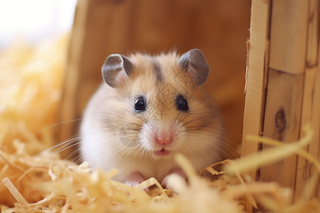

小黃
2010-2023
親愛的小黃，謝謝你陪伴我們13年的時光。你永遠是我們家最溫暖的陽光，是最忠實的朋友。現在你在彩虹橋的另一端，依然帶著那迷人的微笑，等待著我們再相聚的那一天。
米米
2015-2022
優雅的米米，你總是安靜地陪伴在我身邊，用你特別的方式表達愛意。即使你已經離開，我依然能感受到你在我腳邊蹭來蹭去的溫暖。願你在天堂也能找到最舒適的陽光躺著。

丸子
2020-2022
小小的丸子，雖然和你相處的時間不長，但你帶給我們的快樂卻是無限的。你可愛的小臉和活潑的個性永遠留在我們心中。希望天堂有很多好吃的零食給你。